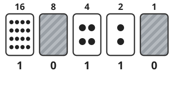

Die Bit-Karten
Mit einem KI-Tutor lernen
Ein KI-Tutor erklärt dir diese Seite und hilft dir bei den Aufgaben. Wähl deinen Assistenten:
Mit Claude öffnen Mit ChatGPT öffnen Mit Mistral Vibe öffnen
Du nutzt dein eigenes Konto beim Anbieter. Der Assistent ist kein Angebot von lernapps.net: lernapps liefert nur Inhalte und Aufgaben. Die Wahl gilt für alle Seiten, nur auf diesem Gerät.
Ein Zimmer ohne Nummer
Die 6b ist in der Jugendherberge „Am Seeberg“ angekommen. Jona sucht sein Zimmer. Aber an den Türen steht keine Zimmernummer. An jeder Tür hängen fünf Karten. Eine offene Karte zeigt Punkte. Eine verdeckte Karte zeigt ihre Rückseite, und die hat keine Punkte. Über jeder Karte steht, wie viele Punkte sie offen hat. Diese Zahl ist der Wert der Karte.
Hier lernst du, jede Zahl nur mit 0 und 1 zu schreiben: ein Code mit nur zwei Zeichen.
 © CC-BY-4.0
© CC-BY-4.0Die Karten an Jonas Tür. Zähle die Punkte auf den offenen Karten.
Aufgabe
Lösung
Richtige Antwort: 13
8 + 4 + 1 = 13. Jona schläft in Zimmer 13.
Eine Karte ist ein Bit
Jede Karte liegt entweder offen oder verdeckt. Für offen schreibst du 1, für verdeckt 0. Jonas Tür zeigt dann: verdeckt, offen, offen, verdeckt, offen. Kurz: 01101. Diese Ziffern hintereinander nennt man eine Bitfolge.
- Bit
Ein Bit ist ein Zeichen mit nur zwei möglichen Werten, 0 oder 1.
- Binärzahl
Eine Binärzahl schreibt man nur mit den Ziffern 0 und 1. Jede 1 zählt so viel wie der Wert ihrer Karte.
Merke
Jede Karte ist doppelt so viel wert wie die Karte rechts neben ihr. Die größte Karte liegt links. Darum zählt es, wo eine 1 steht, nicht nur, wie viele Einsen es sind.
Den Wert einer Stelle nennt man Stellenwert, wie bei Einern, Zehnern und Hundertern: Dort ist jede Stelle zehnmal so viel wert (Dezimalsystem). Bei den Karten ist jede Stelle doppelt so viel wert (Binärsystem). Nullen ganz vorne ändern nichts: 00101 ist dieselbe Zahl wie 101.
Aufgabe
Lösung
32 richtige Antwort
32 ist doppelt so viel wie 16. So geht die Reihe weiter.
17
17 ist nur 1 mehr als 16. Die Werte verdoppeln sich aber.
20
Bei 20 wäre der Abstand 4. Die Werte verdoppeln sich aber.
64
64 wäre erst die siebte Karte, links neben der 32.
1, 2, 4, 8, 16, 32: Jede Karte ist doppelt so viel wert.
Ausprobieren
Tippe auf eine Karte, um sie umzudrehen. Unter den Karten siehst du die Bitfolge und die Zahl, die sie zeigt. „Alle verdecken“ dreht alle Karten wieder um.
Finde heraus: Welche ist die kleinste Zahl, welche die größte? Gibt es dazwischen eine Zahl, die du nicht legen kannst?
Bitfolge: 00000 · Zahl: 0
Fünf Bit-Karten mit den Werten 16, 8, 4, 2 und 1, alle verdeckt. Tippt man auf eine Karte, dreht sie sich um. Darunter steht, welche Zahl die offenen Karten zeigen, zum Beispiel „Bitfolge: 00101 · Zahl: 5“ für die Karten 4 und 1. Sind alle Karten verdeckt, ist es 00000, also 0. Sind alle offen, ist es 11111, also 31.
Aufgabe
Lösung
Richtige Antwort: 32
Du kannst jede Zahl von 0 bis 31 legen, ohne Lücke. Das sind 32 Zahlen.
Beispiel
Welches Zimmer ist 10110?

© CC-BY-4.0Die Tür von Mias Zimmer
- Schau, welcher Wert über jeder Ziffer steht: 16, 8, 4, 2, 1.
- Nimm nur die Werte, unter denen eine 1 steht: 16, 4 und 2.
- Zähle sie zusammen: 16 + 4 + 2 = 22.
Die Binärzahl 10110 ist die Dezimalzahl 22. Mia schläft mit Selin in Zimmer 22.
Übung
Aufgabe
Lösung
Richtige Antwort: Die Aussage stimmt nicht.
Es kommt darauf an, wo die Einsen stehen. 00111 ist 4 + 2 + 1 = 7, aber 11100 ist 16 + 8 + 4 = 28.
Aufgabe
Drei Beispielaufgaben, jede mit ihrer Lösung:
Aufgabe Nr. 1
Welche Dezimalzahl ist die Binärzahl 01111?
Tipp
Male dir fünf Karten auf und schreibe 16, 8, 4, 2, 1 darüber.
Lösung
- Werte über die Ziffern: 16 · 0, 8 · 1, 4 · 1, 2 · 1, 1 · 1.
- Nur die Karten mit einer 1 zählen. Zusammen sind das 15.
Richtige Antwort: 15
Aufgabe Nr. 2
Welche Dezimalzahl ist die Binärzahl 10010?
Tipp
Male dir fünf Karten auf und schreibe 16, 8, 4, 2, 1 darüber.
Lösung
- Werte über die Ziffern: 16 · 1, 8 · 0, 4 · 0, 2 · 1, 1 · 0.
- Nur die Karten mit einer 1 zählen. Zusammen sind das 18.
Richtige Antwort: 18
Aufgabe Nr. 3
Welche Dezimalzahl ist die Binärzahl 01011?
Tipp
Male dir fünf Karten auf und schreibe 16, 8, 4, 2, 1 darüber.
Lösung
- Werte über die Ziffern: 16 · 0, 8 · 1, 4 · 0, 2 · 1, 1 · 1.
- Nur die Karten mit einer 1 zählen. Zusammen sind das 11.
Richtige Antwort: 11
Aufgabe
Lösung
Richtige Antwort: 1. 00111, 2. 01001, 3. 10000, 4. 10011
00111 ist 7, 01001 ist 9, 10000 ist 16 und 10011 ist 19.
Jetzt kannst du jede Binärzahl mit fünf Stellen lesen. Auf der nächsten Seite gehst du den Weg zurück und legst die Nummer des Busses, 27, selbst mit den Karten.
Fehler gefunden oder eine Idee für diese App?